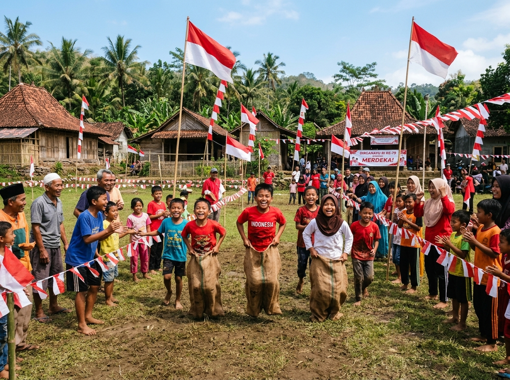
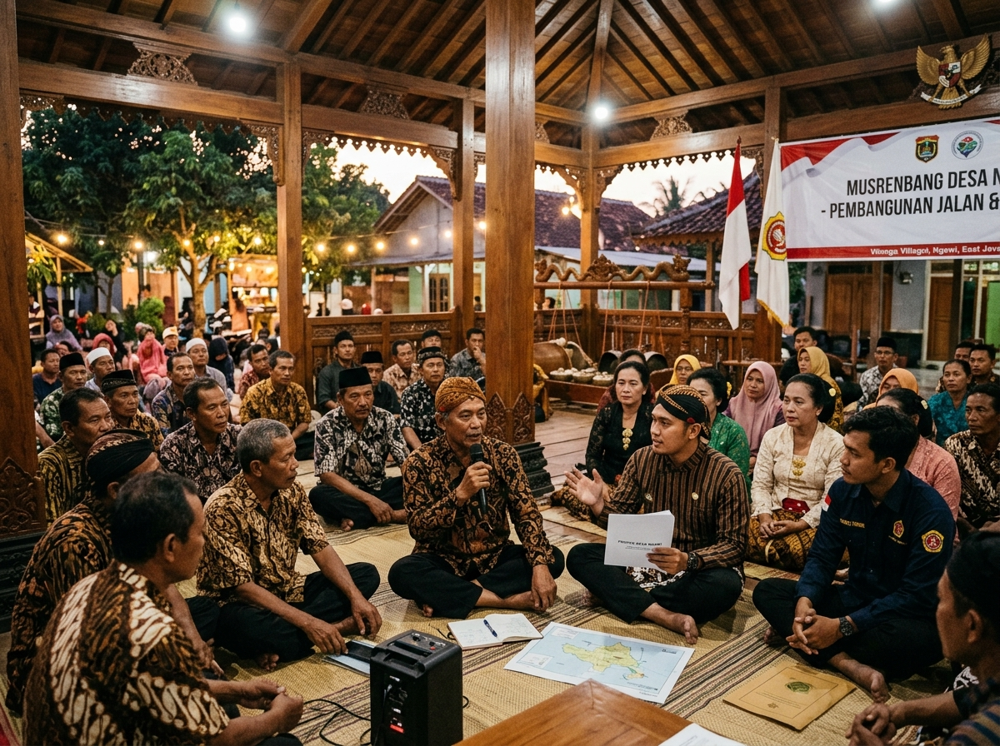
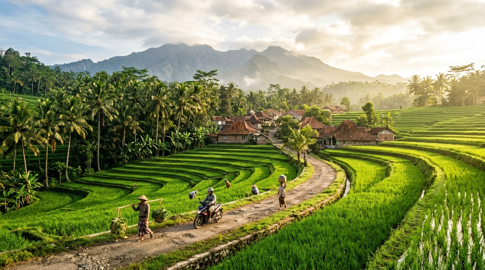

Kategori
Tanggal
•
Foto 1 dari 24
Judul Dokumentasi
Deskripsi detail dokumentasi kegiatan warga.
Selamat datang di portal informasi resmi warga dan pemuda Pencol 2, Kecamatan Gerih, Kabupaten Ngawi. Wadah kebersamaan, keterbukaan laporan kas 17-an, serta ruang kolaborasi generasi muda untuk memajukan desa.

Kekuatan utama kami ada pada kebersamaan. Musyawarah mufakat, kepedulian antar-warga, dan keterbukaan menjadi fondasi setiap langkah pemuda.
Karang Taruna Pencol 2 (Dusun Randusongo, Desa Pencol, Kec. Gerih, Kab. Ngawi) adalah wadah berhimpun seluruh pemuda-pemudi untuk menjaga keharmonisan lingkungan, menggerakkan aksi sosial, dan membina generasi muda berkarakter.
Dari perayaan kemerdekaan 17-an, kerja bakti saluran irigasi pertanian, hingga turnamen olahraga desa, semua kegiatan direncanakan secara partisipatif di balai pendopo dusun bersama para sesepuh dan ketua RT.
Setiap program dan iuran dibahas bersama secara transparan di lokasi yang ditentukan.
Semangat kebersamaan warga dalam menjaga kerukunan, merawat lingkungan dusun, dan saling membantu satu sama lain.

Berkenalan dengan rekan-rekan muda yang siap mengabdi, mengkoordinasikan kegiatan warga, dan menjaga amanah kas Pencol 2.
"Guyub rukun, gotong royong nomor satu. Dusun maju kalau pemudanya kompak!"
"Mengawal komunikasi antar-RT dan memastikan seluruh pemuda terangkul aktif."
"Satu rupiah uang kas warga adalah amanah. Laporan rapi, audit terbuka."
"Menyusun administrasi kegiatan, notula musyawarah, dan informasi cepat untuk warga."
"Semarak kemerdekaan dari warga, oleh warga, untuk tawa bahagia seluruh dusun!"
"Tenda terop, sound system panggung, dan sarana lapangan siap siaga tanpa kendala."
Pilih tahun kegiatan untuk melihat momen penuh tawa, kebersamaan, dan gotong royong warga Pencol 2.
Meriahnya perlombaan tradisional menyambut HUT Kemerdekaan RI ke-81 di dusun Pencol 2.

Pertandingan bola voli antar RT dalam rangka memeriahkan hari kemerdekaan.
Transparansi anggaran di hadapan pengurus RT dan perwakilan warga di Balai Pendopo.

Persiapan semarak dekorasi bambu dan bendera merah putih di 4 rukun tetangga Dusun Pencol 2.
Suasana meriah dan tawa ceria anak-anak dusun dalam rangkaian pesta kemerdekaan.
Buka galeri lengkap dalam tampilan pop-up grid layar penuh. Jelajahi 24 dokumentasi lomba, kerja bakti, & panggung kemerdekaan.
Laporan keuangan riil pemasukan donasi warga, pengeluaran belanja perlengkapan lomba, dan sisa kas yang tersimpan aman.
| Tanggal | Keterangan Uraian | Jenis | Nominal (Rp) |
|---|---|---|---|
| 10 Agu 2026 | Iuran Swadaya Warga RT 01 s/d RT 04 Pencol 2 | Pemasukan | +Rp 12.500.000 |
| 12 Agu 2026 | Sponsorship & Sumbangan Donatur Perantau Ngawi | Pemasukan | +Rp 7.000.000 |
| 14 Agu 2026 | Subsidi Alokasi Kas Pemuda Karang Taruna | Pemasukan | +Rp 5.000.000 |
| 16 Agu 2026 | Sewa Tenda Terop, Panggung Tirakatan & Sound System | Pengeluaran | -Rp 6.800.000 |
| 18 Agu 2026 | Belanja Hadiah Lomba Anak & Dewasa (Piala & Bingkisan) | Pengeluaran | -Rp 7.250.000 |
| 20 Agu 2026 | Konsumsi Malam Tirakatan & Konsumsi Juri/Panitia Lomba | Pengeluaran | -Rp 4.500.000 |
| 22 Agu 2026 | Perlengkapan Spanduk, Umbul-umbul & Kebersihan Lapangan | Pengeluaran | -Rp 1.300.000 |
| Sisa Saldo Kas Bersih: | Rp 4.650.000 | ||
Jawaban atas pertanyaan yang paling sering diajukan warga perantau, pemuda, dan kepala keluarga di Dusun Pencol 2.
Deskripsi detail dokumentasi kegiatan warga.